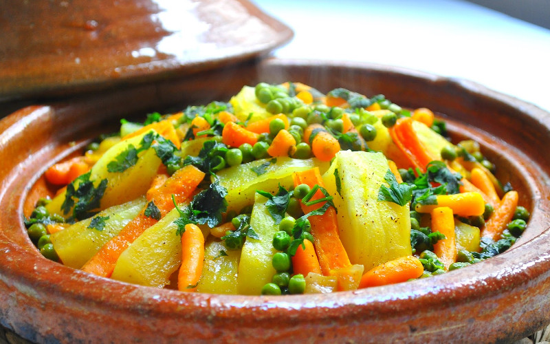
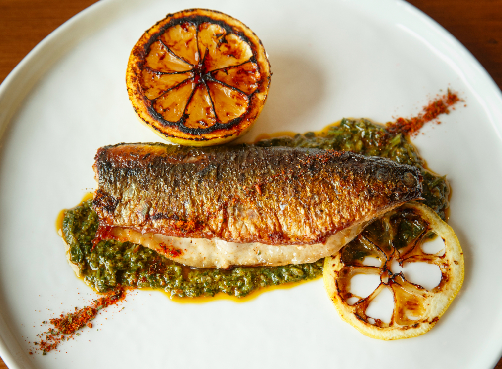

The tajine is the traditional dish par excellence of Morocco. It must be said that this magic word is an evacuator of the flavors of the Maghreb, it is always an invitation to escape to travel. It takes its name well from the typical glazed earthenware utensil in which it is slowly cooked over charcoal. There are endless varieties of tagines, including: tajine with chicken, lemon and olives fish tagine sardine tagine vegetable tagine. Breads called khobz tajine are cooked on a plate also called "tagine". The Moroccan tagine is a dish whose preparation container is called "tagine", it is also a terracotta serving container, topped with a conical lid, from Berber cuisine
Moroccan couscous is a representation of the Maghreb region and it is recognized all over the world because of its uniqueness. In fact, it has been at the heart of international cuisine several times, especially during competitions involving several countries and its preparation remains for the moment an admiration for professionals in this field. Here is a guide that provides you with reliable information that can help you properly prepare this unique dish. For more originality, here are the most popular variants for you. There are among others: ● Moroccan couscous, ● couscous with seven vegetables ● couscous with Tfaya ● egg and almond couscous ● baddaz. Traditional Moroccan couscous contains a very refined selection of vegetables such as: carrots, pumpkins and tomatoes. There are also spices like saffron, ginger, ras-el-hanout, etc. You can put potatoes or sweet potatoes or beans in it.

made with garlic, herbs, preserved lemons, olive oil, and cumin. The fish is seasoned and marinated with half of the sauce and then tossed with the remaining half before being baked or broiled. The rest can be used for another purpose, such as mixing into couscous or a salad. Although each country has its version of chermoula—and there are several variations—the taste is always very similar. This healthy, aromatic dish is low in fat and carbs, but big on flavor. The best part is that this delicious dinner requires little clean up and can be on the table 30 minutes start to finish. Really, chermoula works like a flavour bomb! It is a type of paste or marinade that is very common in North Africa and goes very well with fish, meat, poultry and vegetables. Pretty much with everything savoury.
